Capítulo 7 Apuntes de Control Y Aseguramiento de la Calidad
7.1 Conceptos Básicos
Desde el punto de vista de los clientes, las empresas y/u organizaciones existen para proveer un producto material o inmaterial, un bien o un servicio, ya que ellos necesitan productos con características que satisfagan sus necesidades y expectativas. Estos productos son resultado de un proceso el cual es un conjunto de actividades entrelazadas o interrelacionadas que reciben determinados insumos que son transformados en un resultado o en un producto.
Variables de entrada del proceso
Son las que defi nen las condiciones de operación del proceso e incluyen las variables de control y las que aunque no son controladas, influyen en el desempeño del mismo.
Variables de salida
Son las características de calidad en las que se reflejan los resultados obtenidos en un proceso.
Calidad
Es el juicio que el cliente tiene sobre un producto o servicio, resultado del grado con el cual un conjunto de caracteríticas inherentes al producto cumple con sus requerimientos.
Satisfacción del cliente
Es la percepción de éste acerca del grado con el cual sus necesidades o expectativas han sido cumplidas.
Tiempo de ciclo
Es el tiempo que transcurre desde que el cliente inicia un pedido que se transforma en requerimientos de materiales, órdenes de producción y de otras tareas, hasta que todo se convierte en un producto en las manos de éste.
Cuando se tiene mala calidad en las diferentes actividades hay equivocaciones y fallas de todo tipo, por ejemplo:
- Reprocesos, desperdicios y retrasos en la producción.
- Pagar por elaborar productos malos.
- Paros y fallas en el proceso.
- Una inspección excesiva para tratar que los productos de mala calidad no salgan al mercado.
- Reinspección y eliminación de rechazo.
- Más capacitación, instrucciones y presión a los trabajadores.
- Gastos por fallas en el desempeño del producto y por devoluciones.
- Problemas con proveedores.
- Más servicios de garantía.
- Clientes insatisfechos y pérdidas de ventas.
- Problemas, diferencias y conflictos humanos en el interior de la empresa.
Competitividad
Es la capacidad de una empresa para generar valor para el cliente y sus proveedores de mejor manera que sus competidores.
Productividad
Es la capacidad de generar resultados utilizando ciertos recursos. Se incrementa maximizando resultados y/u optimizando recursos.
Eficiencia
Relación entre los resultados logrados y los recursos empleados. Se mejora optimizando recursos y reduciendo tiempos desperdiciados por paros de equipo, falta de material, retrasos, etcétera.
Eficacia
Grado con el cual las actividades planeadas son realizadas y los resultados previstos son logrados. Se atiende maximizando resultados.
Acciones preventivas
Son aquellas que se implementan para eliminar la causa de una inconformidad u otra situación potencial indeseable.
Acciones correctivas
Se emplean para eliminar la causa de una no conformidad detectada. Es decir, están orientadas a prevenir recurrencias.
Sistema de medición del desempeño
Se refiere a cuantificar los signos vitales de la organización y con base en ellos encauzar el pensamiento de los empleados y fijar prioridades.
Conformancia
Consiste en cumplir con las especificaciones de calidad y enfocarse a reducir el retrabajo y los desperdicios.
Variabilidad
Se refiere a la diversidad de resultados de una variable o de un proceso.
Por ejemplo, en un banco se lleva un registro de los minutos que los clientes esperan para ser atendido; al azar se eligen 40 de estos tiempos de espera y se obtiene lo siguiente:
18.1 7.9 14.6 13.6 14.2 13.0 11.0 7.4 8.7 11.3 13.4 7.0 5.4 9.2 8.0 4.8 14.2 13.5 13.9 11.8 11.3 12.9 15.7 13.3 6.7 0.7 13.1 9.6 6.8 9.1 9.3 9.3 9.0 14.2 12.2 12.5 11.4 7.7 6.9 11.4
En el caso de esta muestra el tiempo promedio de espera fue de 11.1. Pero existe variación, ya que un cliente espera menos de un minuto (0.7) y otro fue atendido después de 18.1 minutos de espera.
6M
Son los materiales, mano de obra, mediciones, medio ambiente, máquinas y métodos que conforman un proceso.
Pensamiento estadístico
Filosofía de aprendizaje y acción que establece la necesidad de un análisis adecuado de los datos de un proceso, como una acción indispensable para mejorar su calidad (reducir su variabilidad).
Ciclo de la calidad (ciclo PHVA)
Proceso de cuatro etapas para desarrollar proyectos de mejora; consiste en planear, hacer, verificar y actuar (PHVA).
Ocho pasos en la solución de un problema.
| ETAPA | PASO | NOMBRE Y BREVE DESCRIPCIÓN DEL PASO |
|---|---|---|
| Planear | 1 | Seleccionar y caracterizar un problema: elegir un problema realmente importante, delimitarlo y describirlo, estudiar antecedente e importancia, y cuantificar su magnitud actual. |
| 2 | Buscar todas las posibles causas: Lluvia de ideas, diagrama de Ishikawa. Participan los involucrados | |
| 3 | Investigar cuáles de las causas son más importantes: recurrir a datos, análisis y conocimiento del problema. | |
| 4 | Elaborar un plan de medidas enfocado a remediar las causas más importantes: para cada acción, detallar en qué consiste, su objetivo y cómo implementarla; responsables, fechas y costos. | |
| Hacer | 5 | Ejecutar las medidas remedio: seguir el plan y empezar a pequeña escala. |
| Verificar | 6 | Revisar los resultados obtenidos: comparar el problema antes y después. |
| Actuar | 7 | Prevenir la recurrencia: si las acciones dieron resultado, éstas deben generalizarse y estandarizar su aplicación. Establecer medidas para evitar recurrencia |
| 8 | Conclusión y evaluación de lo hecho: evaluar todo lo hecho anteriormente y documentarlo. |
7.2 Estadística descriptiva
Las variables de salida o de respuesta de un proceso deben cumplir con ciertas metas y/o especificaciones, a fin de que sea posible considerar que el proceso funciona de manera satisfactoria. Por ello, una tarea primordial del control de calidad es conocer la capacidad o habilidad de un proceso, que consiste en determinar la amplitud de la variación natural del proceso para una caracterítica de calidad dada. Esto permitirá saber en qué medida tal caracterítica de calidad es satisfactoria.
Capacidad de un proceso
Consiste en conocer la amplitud de la variación natural del proceso para una caracterítica de calidad dada; esto permitirá saber en qué medida tal caracterítica de calidad es satisfactoria (cumple especificaciones).
Estadísticos
Mediciones o cálculos que se obtienen a partir de un conjunto de datos con el objetivo de conocer sus caracteríticas más relevantes.
Para ejemplificar todas las medidas ya sean estas de tendencia central o de variabilidad se usaran los siguientes datos:
7.2.1 Medidas de tendencia central
Tendencia central
Valor en torno al cual los datos o mediciones de una variable tienden a aglomerarse o concentrarse. A continuación se presentan las medidas de tendencia central de un conjunto de datos.
Media muestral
Medida de tendencia central que es igual al promedio aritmético de un conjunto de datos, que se obtiene al sumarlos y el resultado se divide entre el número de datos. Supongamos que \(x_{1}+x_{2}+...+x_{n}\) son las observaciones numéricas de una muestra.
\[\begin{equation} \bar{X}=\frac{x_{1}+x_{2}+...+x_{n}}{n}=\frac{\sum_{i=1}^{n}x_{i}}{n} \end{equation}\] En R se utiliza la siguiente linea de código:
## [1] 1.17864Media poblacional o del proceso, \(\mu\)
Si para calcular la media se utilizan todos los elementos de la población (todos los posibles individuos, especímenes, objetos o medidas de interés sobre los que se hace un estudio), entonces el promedio calculado es la media del proceso (o media poblacional) y se denota con la letra griega \(\mu\) (mu). Es importante destacar que la media del proceso μ es igual a cierto valor, aunque no siempre se conoce; mientras que el valor de \(\bar{x}\) se obtiene para cada muestra y es diferente (variable) de una muestra a otra, ya que su valor depende de las piezas que se seleccionan (\(\bar{x}\) es una variable aleatoria).
Mediana o percentil 50
La mediana \((\tilde{x})\) es igual al valor que divide a la mitad a los datos cuando son ordenados de menor a mayor.Así, para calcular la mediana cuando el número de datos es impar, éstos se ordenan de manera creciente y el que quede en medio de dicho ordenamiento será la mediana. Pero si el número de datos es par, entonces la mediana se calcula dividiendo entre dos la suma de los números que están en el centro del ordenamiento. En R se usa la sigueinte función:
## [1] 1.18Moda
La moda es igual al dato que se repite más veces. Si varios datos tienen la frecuencia más grande, entonces cada uno de ellos es una moda, y se dice que el conjunto de datos es multimodal. En R no existe una función para encontrar la moda, un posible código sería:
## [1] 1.17Las medidas de tendencia central son insuficientes como criterio de calidad
Suponga que la longitud de una pieza debe estar entre 800 \(\pm\) 5. Para ver si se cumple con las especificaciones se toma una muestra aleatoria grande y se obtiene que: \[\begin{equation} \bar{X}= 801,\ \ \tilde{X} = 801 \ \mathrm{\ y \ moda} = 800 \end{equation}\]
Debido a que estos estadíticos están dentro de las especificaciones, se podría creer que el proceso cumple con éstas. Sin embargo, esto no necesariamente es cierto, ya que en la muestra podría haber datos desde 750 hasta 850 y la media de todos ellos ser 801. Pero también podría ocurrir que el rango de variación de los datos vaya de 797 a 803, con lo que sí se cumpliría con las especificaciones. En otras palabras, las medidas de tendencia central son insuficientes como criterio de calidad, ya que no toman en cuenta qué tan dispersos están los datos, un hecho vital para la calidad.
7.2.2 Medidas de dispersión o variabilidad
Además de conocer la tendencia central de un conjunto de datos es necesario saber qué tan diferentes son entre sí, es decir, es preciso determinar su variabilidad o dispersión. Esto es un elemento vital en el estudio de capacidad de un proceso. En seguida veremos cuatro formas de medir la variabilidad.
Desviación estándar muestral
Es la medida más usual de variabilidad e indica qué tan esparcidos están los datos con respecto a la media; se denota con la letra \(S\) y se calcula mediante la siguiente expresión:
\[\begin{equation} S=\sqrt{\frac{\left ( x_{1}-\bar{x} \right )^{2}+\left ( x_{2}-\bar{x} \right )^{2}+...+\left ( x_{n}-\bar{x} \right )^{2}}{n-1}} \end{equation}\]
En R tenemos:
## [1] 0.02695109donde \(x_{1}+x_{2}+...+x_{n}\) son las observaciones numéricas de la muestra, \(n\) su tamaño y \(\bar{x}\)es la media muestral. Como se puede apreciar, S mide la distancia que en promedio hay entre los datos y la media; por ello, entre más grande sea el valor de S habrá mayor variabilidad en los datos.
Desviación estándar poblacional o del proceso, \(\sigma\)
Si para calcular la desviación estándar muestral se emplean todos los elementos de la población o proceso, entonces se obtiene la desviación estándar poblacional y se denota con la letra griega sigma (\(\sigma\)). Por otra parte, el cuadrado de la desviación estándar,\(S^{2}\) , conocido como varianza muestral, es muy importante para propósitos de inferencia estadítica. Y en forma equivalente \(\sigma^{2}\) es la varianza (o variancia) poblacional.
Rango o recorrido, R
Es igual a la diferencia entre el dato mayor y el dato menor de un conjunto de datos. El rango mide la amplitud de la variación de un grupo de datos, y es independiente de la magnitud de los datos.
En R:
## [1] 1.11 1.25Coeficiente de variación CV
El coeficiente de variación, CV, es una medida de variación que es relativa a la magnitud de los datos, ya que es igual a la magnitud relativa de la desviación estándar en comparación con la media de los datos, es decir:
\[\begin{equation} CV = \frac{S}{\bar{x}}(100) \end{equation}\] En R:
## [1] 2.286626El CV es útil para comparar la variación de dos o más variables que están medidas en diferentes escalas o unidades de medición.
7.2.3 Relación entre \(\bar{X}\) y \(S\) (interpretación de la desviación estándar)
Desigualdad de Chebyshev
Sea X variable aleatoria de media \(\mu\) y varianza finita \(\sigma^{2}\), entonces, para todo número real \(a>0\), \[\begin{equation} P\left ( \left | X-\mu \right |>a\sigma \right )\leq \frac{1}{a^{2}} \end{equation}\] Sólo en caso de que \(a>1\) la desigualdad proporcionan una cota no trivial.
Regla empírica
Es la descripción de la proporción de observaciones que se encuentran alrededor de la media, en unidades de desviaciones estándar, siempre que la distribución de frecuencias sea aproximadamente simétrica
Dos hechos particulares que afirma la desigualdad de Chebyshev es que:
- entre \(\bar{X}-2S\) y \(\bar{X}+2S\) están por lo menos 75% de los datos de la muestra, y que
- entre \(\bar{X}-3S\) y \(\bar{X}+3S\) están por lo menos 89% de éstos.
En cuanto a la regla empírica se afirma que en muchos de los datos que surgen en la práctica se ha observado por la experiencia que:
⢠Entre \(\bar{X}-1S\) y \(\bar{X}-1S\) está 68% de los datos de la muestra.
⢠Entre \(\bar{X}-2S\) y \(\bar{X}-2S\) está 95%.
⢠Entre \(\bar{X}-3S\) y \(\bar{X}-3S\) está 99.7%.
En R:
#k es el numero de desviaciones estándar
intervalo <- function(x,k){
i1 <- mean(x)-k*sd(x)
i2 <- mean(x)+k*sd(x)
return(c(i1,i2))
}
intervalo(vector_de_datos,3) Todos los intervalos anteriores son válidos sólo para los datos muestrales y no necesariamente para toda la población o proceso. Sin embargo, si los intervalos se calculan con la media y la desviación estándar del proceso o población, entonces serán válidos para toda la población. Por lo tanto, en la medida que se tengan muestras aleatorias grandes y representativas, los intervalos anteriores podrán dar una idea aproximada de lo que pasa en el proceso.
7.2.4 Límites reales o naturales
Los límites reales o naturales de un proceso indican los puntos entre los cuales varía la salida de un proceso y, por lo general, se obtienen de la siguiente manera: \[\begin{equation} \text{Límite real inferior (LRI)} = \mu â 3\sigma \ \ \ y \ \ \ \text{Límite real superior (LRS)} = \mu + 3\sigma \end{equation}\]
Para obtener un pequeño resumen de los datos usamos el siguiente comando:
## Min. 1st Qu. Median Mean 3rd Qu. Max.
## 1.110 1.160 1.180 1.179 1.200 1.2507.3 Histograma y tabla de frecuencias
7.3.1 Tabla de frecuencias
Representación en forma de tabla de la distribución de unos datos, a los que se clasifica por su magnitud en cierto número de clases. En R podemos tener una tabla de frecuencias de la siguiente manera:
## vector_de_datos
## 1.11 1.12 1.13 1.14 1.15 1.16 1.17 1.18 1.19 1.2 1.21 1.22 1.23 1.24 1.25
## 2 1 6 2 9 17 23 11 20 19 3 6 3 2 17.3.2 Histograma
Representación gráfica de la distribución de un conjunto de datos o de una variable, donde los datos se clasifi can por su magnitud en cierto número de clases. Permite visualizar la tendencia central, la dispersión y la forma de la distribución. En R:
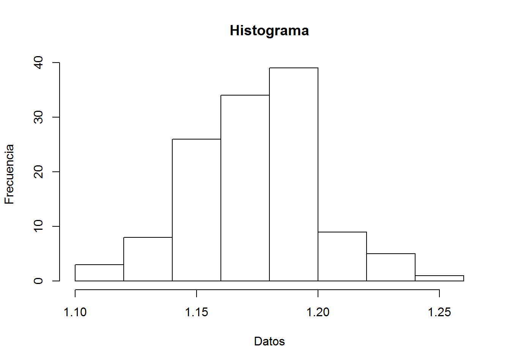
Interpretación del histograma
Cuando un histograma se construye de manera correcta, es resultado de un número suficiente de datos (de preferencia más de 100), y éstos son representativos del estado del proceso durante el periodo de interés; entonces, se recomienda considerar los siguientes puntos en la interpretación del histograma.
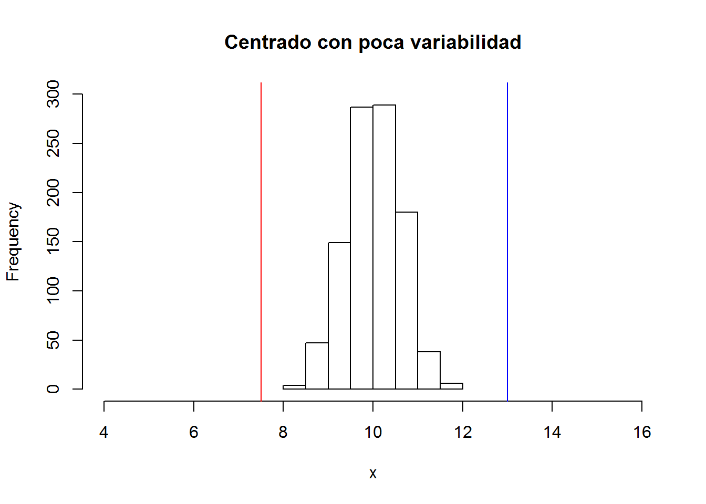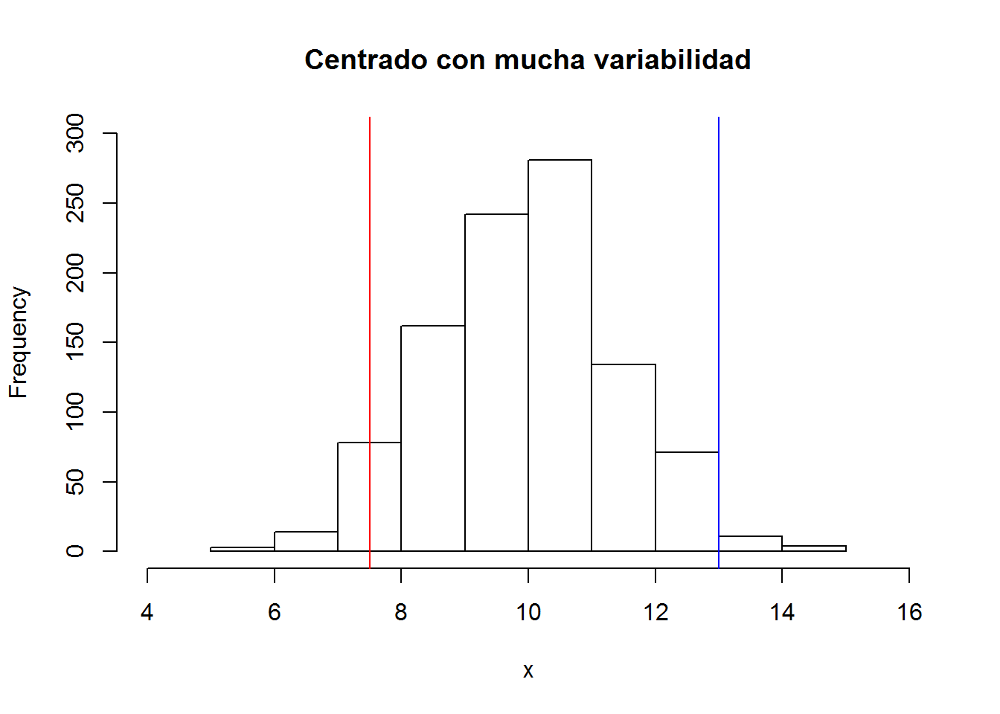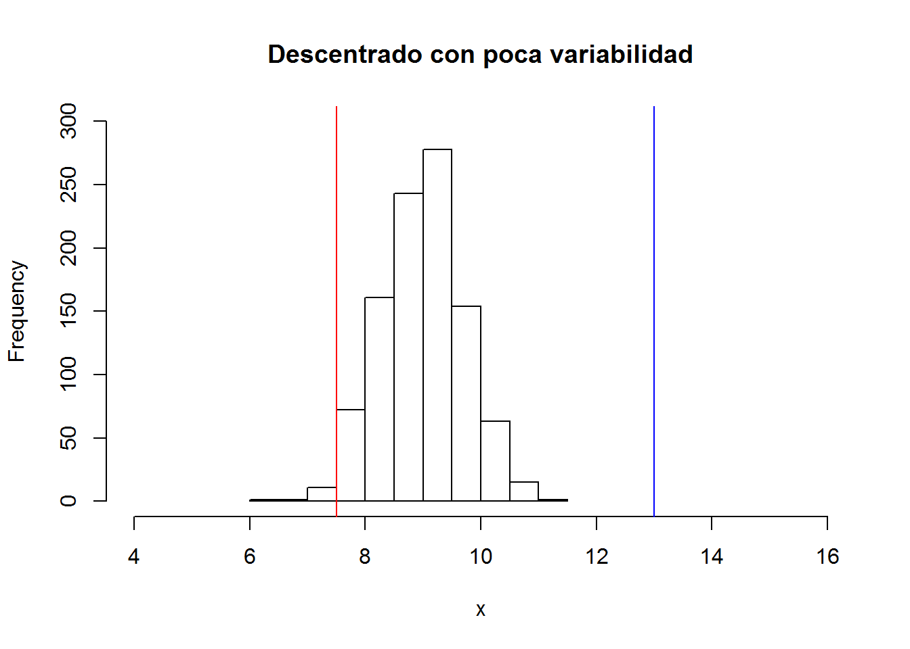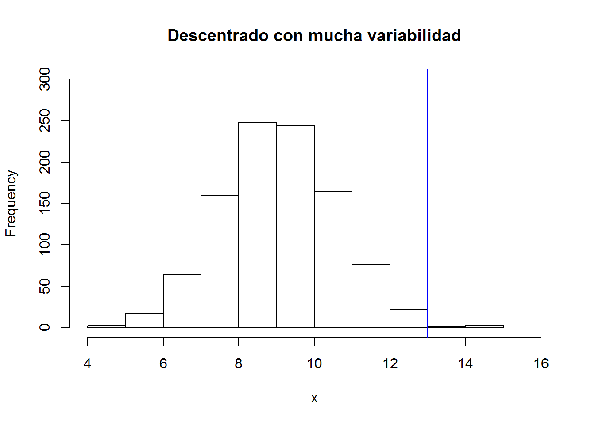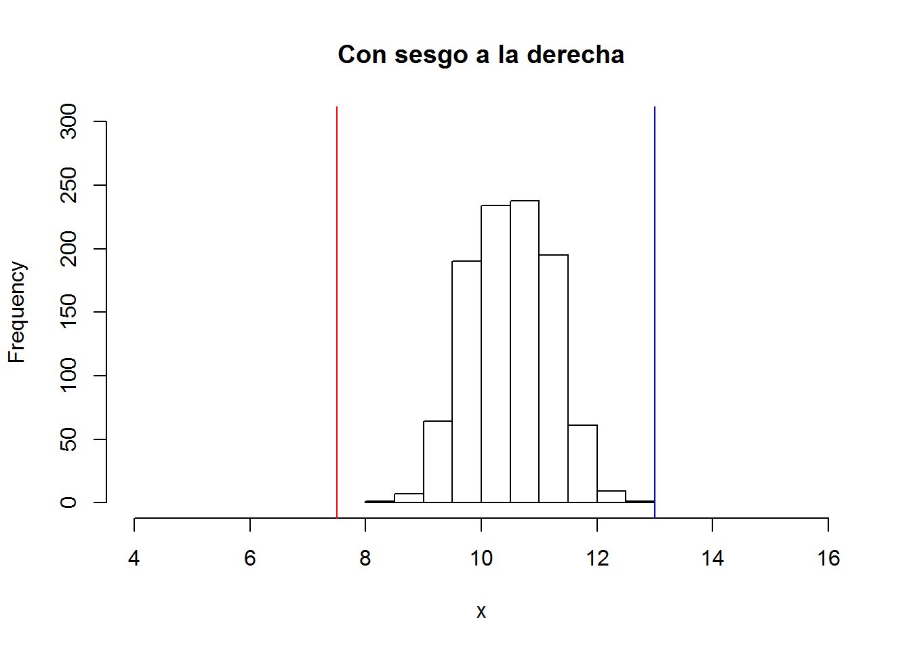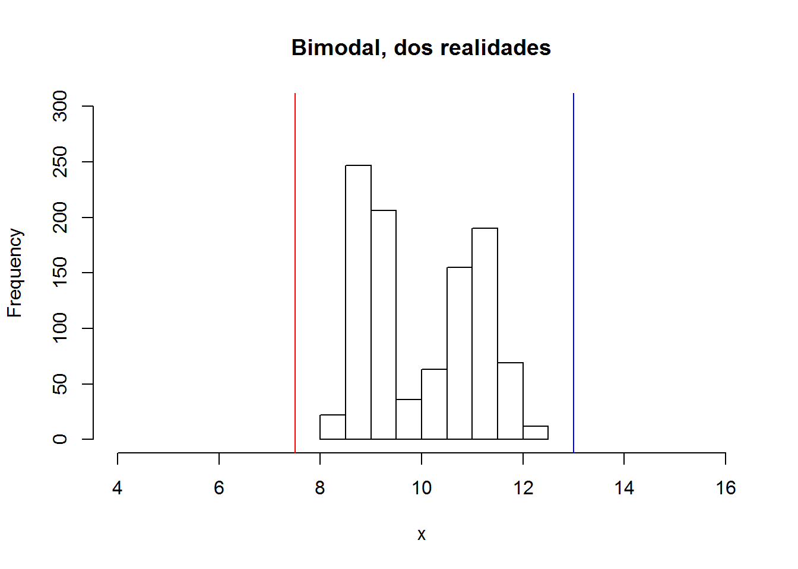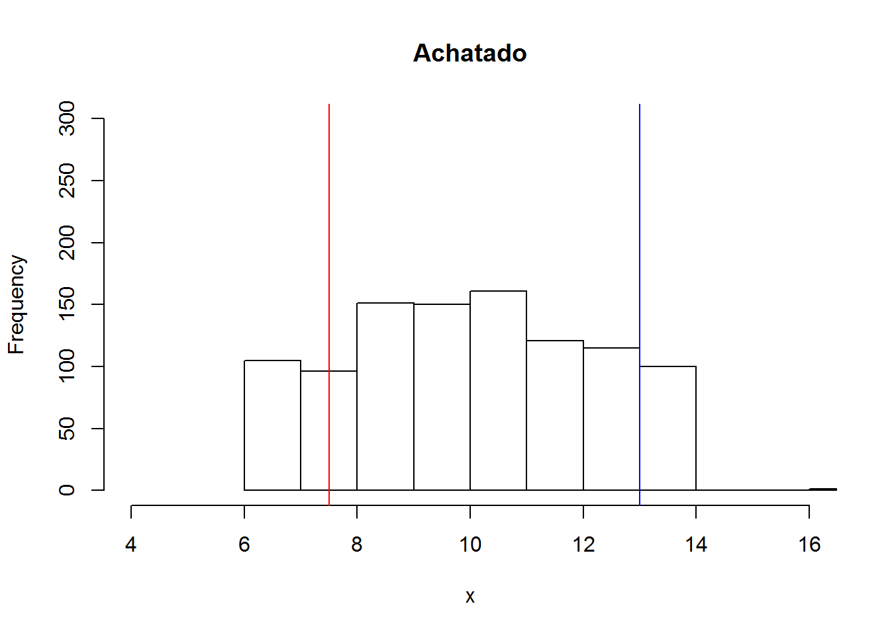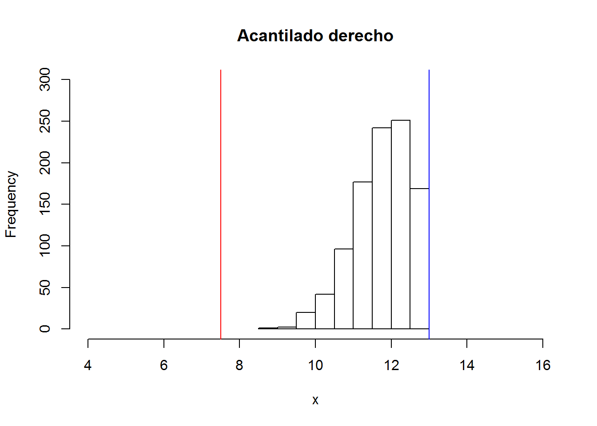
1. Observar la tendencia central de los datos. Localizar en el eje horizontal o escala de medición las barras con mayores frecuencias.
2. Estudiar el centrado del proceso. Para ello, es necesario apoyarse en el punto anterior y observar la posición central del cuerpo del histograma con respecto a la calidad óptima y a las especificaciones.
3.Examinar la variabilidad del proceso. Consiste en comparar la amplitud de las especificaciones con el ancho del histograma. Para considerar que la dispersión no es demasiada, el ancho del histograma debe caber de forma holgada en las especificaciones.
4. Analizar la forma del histograma. Al observar un histograma considerar que la forma de distribución de campana es la que más se da en salidas de proceso y tiene caracteríticas similares a la distribución normal.
Distribución sesgada.- Forma asimétrica de la distribución de unos datos o una variable, donde la cola de un lado de la distribución es más larga que la del otro lado.
Distribución multimodal.-Forma de la distribución de unos datos en la que sea aprecian claramente dos o más modas (picos). Por lo general, cada moda refleja una condición o realidad diferente.
Algunas situaciones que originan una distribución multimodal son:
Diferencias importantes de lote a lote en la materia prima que utiliza el proceso, debido a que proceden de diferentes proveedores o al exceso de variación de un mismo proveedor.
Cuando en el proceso intervienen varios operadores, con criterios o métodos de trabajo diferentes.
Las mediciones de la variable de salida que están representadas en el histograma fueron realizadas por personas o instrumentos diferentes; por lo tanto, se utilizaron distintos criterios o instrumentos mal calibrados.
El proceso, cuando generó los resultados de la distribución multimodal, fue operando en condiciones diferentes (una condición para cada moda).
En general, una distribución multimodal se debe a la presencia de fuentes de variación bien definidas que deben ser identificadas y corregidas, a fin de mejorar la capacidad del proceso correspondiente. Una forma de identificarlas es analizar por separado los datos en función de diferentes lotes de materia prima, operadores, instrumentos de medición, turnos o días de producción, etc., para así comparar los resultados y ver si hay diferencias significativas.
Distribución muy plana.- Es una distribución muy chata o plana y que está lejos de tener forma de campana. Las situaciones que pueden causar esto son las mismas que las de la distribución multimodal, pero con la particularidad de que las diferencias son menos fuertes; sin embargo, afectan de manera seria la capacidad de un proceso. Por lo tanto, también deben ser identificadas y corregidas mediante la estrategia recomendada antes.
Distribución con acantilados.- Es una suspensión o corte muy brusco en la caída de la distribución. Algunas de las posibles causas que motivan la presencia de un acantilado son: un lote de artículos previamente inspeccionados al 100% donde se excluyó a los artículos que no cumplen con alguna medida mínima o que exceden una medida máxima, problemas con el equipo de medición, errores en la medición o inspección.
5. Dato raro o atípico. Medición cuya magnitud es muy diferente a la generalidad de las mediciones del conjunto de datos correspondiente.
6. Estratificación.Consiste en clasifi car y analizar datos de acuerdo con las distintas fuentes de donde proceden, como, por ejemplo por máquinas, lotes, proveedores, turnos, etcétera.
7.3.3 Limitaciones del histograma
Aunque el histograma es una herramienta fundamental para analizar el desempeño de un proceso, tiene algunas limitaciones:
1. No considera el tiempo en el que se obtuvieron los datos; por lo tanto, con el histograma es difícil detectar tendencias que ocurren a través del tiempo. Por tal razón, no ayuda a estudiar la estabilidad del proceso en el tiempo, lo cual se analiza por medio de cartas de control.
2. No es la técnica más apropiada para comparar de manera práctica varios procesos o grupos de datos; en esos casos, el diagrama de caja o la gráfica de medias son más apropiados.
3. La cantidad de clases o barras influye en la forma del histograma, por lo que una buena práctica es que a partir de la cantidad de clases que de manera inicial sugiere un software, se analice el histograma con un número de clases ligeramente menor y un poco más de clases, a fin de verificar si se observa algo diferente.
7.4 Medidas de forma
En el análisis de un conjunto de datos o una variable es estudiar la forma de su distribución. Por ello, se presentan las mediciones del sesgo y la curtosis. Para usarlas en R se necesita el paquete{moments}
7.4.1 Sesgo
Es una medida numérica de la asimetría en la distribución de un conjunto de datos, se obtiene a través del sesgo y del sesgo estandarizado (skewness), los cuales están dados por:
\[\begin{equation} \text{Sesgo}= \frac{n \sum_{i=1}^{n}(x_{i}-\bar{x})^{3}}{(n-1)(n-2)S^{3}} \end{equation}\]
En R:
\[\begin{equation} \text{Sesgo estandarizado}= \frac{Sesgo}{\sqrt{\frac{6}{n}}} \end{equation}\]
donde n es el tamaño de la muestra, \(S\) la desviación estándar y \(\bar{x}\) la media muestral.
El signo del sesgo indica el lado para el que la cola de la distribución es más larga, ya sea hacia la izquierda (signo â) o hacia la derecha (signo +). Para los datos que siguen una distribución normal, el valor del sesgo estandarizado debe caer dentro de \((â2, +2)\), por lo que si n es grande \((n > 100)\) y el sesgo estandarizado está fuera de tal intervalo, será una evidencia de que la distribución de los datos tiene un sesgo significativamente diferente al de la distribución normal o, en otras palabras, que la distribución de los datos no es normal.
7.4.2 Curtosis
Una medida para determinar qué tan elevada o plana (achatada o picuda) es la distribución de ciertos datos, tomando como referencia la distribución normal, se obtiene a través del estadítico llamado curtosis y del coeficiente de curtosis estandarizado, que están dados por:
\[\begin{equation} \text{Curtosis}= \frac{n(n+1) \sum_{i=1}^{n}(x_{i}-\bar{x})^{4}}{(n-1)(n-2)(n-3)S^{4}}- \frac{3(n-1)}{(n-2)(n-3)} \end{equation}\]
En R:
\[\begin{equation} \text{Curtosis estandarizado}= \frac{curtosis}{\sqrt{\frac{24}{n}}} \end{equation}\]
7.4.3 Cuantiles (percentiles)
Medidas de localización que separan por magnitud un conjunto de datos en cierto número de grupos o partes que contienen la misma cantidad de datos.Por ejemplo, los deciles dividen los datos en 10 grupos.De manera más formal, sea \(x_1, x_2, ..., x_n\) un conjunto de n mediciones ordenadas en forma creciente, se define su percentil \(p\) como el valor x tal que el \(p \%\) de las mediciones es menor o igual a x, y el \((100 â p) \%\) mayor o igual. \[P_k=L_i+\frac{\frac{k*N}{100}-F_{i-1}} {f_i}a_i\] \[k=1,2,...,99\] En donde:
- \(L_i\) es el límite inferior de la clase donde se encuentra el percentil.
- \(N\) es la suma de las frecuencias absolutas.
- \(F_{i-1}\) es la frecuencia acumulada anterior a la clase del percentil.
- \(a_i\) es la amplitud de la clase.
Ejemplo
Calcular el percentil 35 y 60 de la distribución de la tabla:
| Intervalos | \(f_i\) | \(F_i\) |
|---|---|---|
| [50, 60) | 8 | 8 |
| [60, 70) | 10 | 18 |
| [70, 80) | 16 | 34 |
| [80, 90) | 14 | 48 |
| [90, 100) | 10 | 58 |
| [100,110) | 5 | 63 |
| [110,120) | 2 | 65 |
| 65 |
- Para Percentil 35, tenemos que:
\[P_{35}=70+\frac{\frac{35*65}{100}-18} {16}*10=72.97\]
- Ahora para Percentil 60, tenemos que:
\[P_{60}=80+\frac{\frac{60*65}{100}-34} {14}*10=83.57\]
7.4.4 Cuartiles
Son iguales a los percentiles 25, 50 y 75, y sirven para separar por magnitud la distribución de unos datos en cuatro grupos, donde cada uno contiene \(25\%\) de los datos. Como vimos antes, al percentil 25 también se le conoce como primer cuartil o cuartil inferior, \(C_i\); mientras que la mediana que es el percentil 50 corresponde al cuartil medio \(C_m\); y el percentil 75 es el cuartil superior, \(C_s\) o tercer cuartil.
Utilizando R, podemos calcular los cuartiles:
x<-c(18.6 ,19.9, 18.8, 18.4, 19.0, 20.1, 19.7, 19.3, 20.7, 19.6, 19.5, 19.1, 18.5, 19.6, 19.4, 19.6, 20.3, 18.8, 19.2, 20.6, 20.0, 18.4, 18.9, 19.7, 17.8, 19.4, 18.9, 18.4, 19.0, 19.7)
summary(x)## Min. 1st Qu. Median Mean 3rd Qu. Max.
## 17.80 18.82 19.35 19.30 19.70 20.70- \(C_i\)=19.00
- \(C_m\)=Mediana=19.25
- \(C_s\)=19.60
7.4.5 Diagrama de caja
Representación gráfi ca de la distribución de un conjunto de datos que se basa en los cuartiles. Es de gran utilidad para hacer análisis comparativos.De esta forma es posible visualizar dónde termina de acumularse \(25\%\) de los datos menores, y a partir de dónde se localiza \(25\%\) de los datos mayores. Entre estos dos cuartiles se ubica \(50\%\) de los datos que están al centro. Pero además de los cuartiles están involucrados los siguientes conceptos:
- Rango intercuartílico, \(R_c\) = \(C_s\) â \(C_i\)
- Barrera interior izquierda, \(C_i\)â 1.5 \(R_c\) e interior derecha \(C_s\) +1.5 \(R_c\)
- Barrera exterior izquierda, \(C_i\) â 3 \(R_c\), y exterior derecha \(C_s\) + 3\(R_c\)
El Rango intercuartílico es igual a la distancia entre el cuartil inferior y el superior, y determina el rango en el que se ubican \(50\%\) de los datos que están en el centro de la distribución. A continuación serán los pasos para realizar un diagrama de cajas horizontal
Haga una escala numérica que abarque toda la variación de los datos. Arriba de esta escala trace una caja o rectángulo cuyo largo vaya desde el cuartil inferior \(C_i\) hasta el cuartil superior \(C_s\). Así, el largo del rectángulo es igual al rango intercuartílico, \(R_c\) = \(C_s\) â \(C_i\).
Del lado izquierdo del rectángulo se traza un bigote, brazo o línea paralela a la escala que va de \(C_i\) hasta el dato más pequeño que aún está por dentro de la barrera interior izquierda. Si hay datos por debajo de la barrera, se representarán por medio de puntos aislados que se ubicarán de acuerdo con la magnitud del dato correspondiente.
En forma similar se traza el brazo o bigote derecho: que va desde \(C_s\) hasta el dato más grande que aún está dentro de la barrera interior derecha. Si hay datos por arriba de la barrera, se representarán por medio de un punto que se ubicará de acuerdo con la magnitud del dato correspondiente. Los datos que superan las barreras interiores pueden ser considerados como datos alejados con cierta sospecha de ser atípicos.
- Si aún hay datos por fuera de las barreras exteriores, se representarán con un asterisco. Los datos que queden fuera de estas barreras exteriores, de manera definitiva pueden considerarse datos muy alejados, raros o aberrantes.
Realizando con R, para el gráfico horizontal, se tiene que:
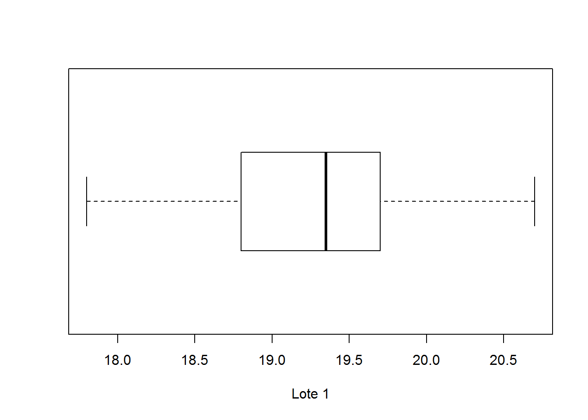
Y por defecto se tiene el diagrama de caja, verticalmente:
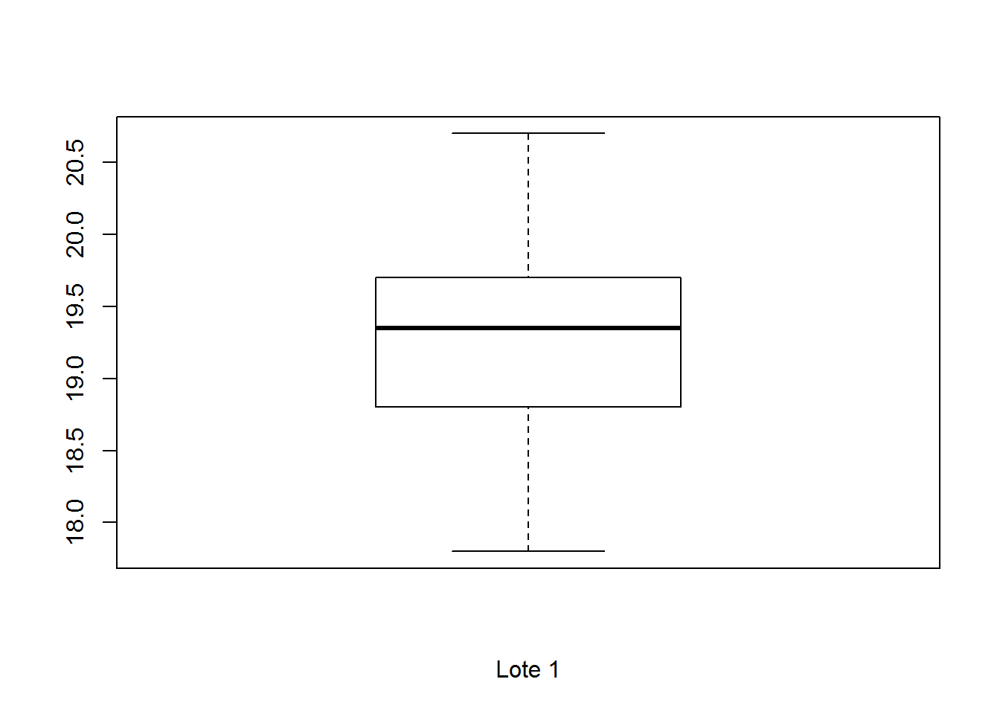
Cuando se tiene varias muestras, y se las desea comparar en un solo gráfico, se tiene que:
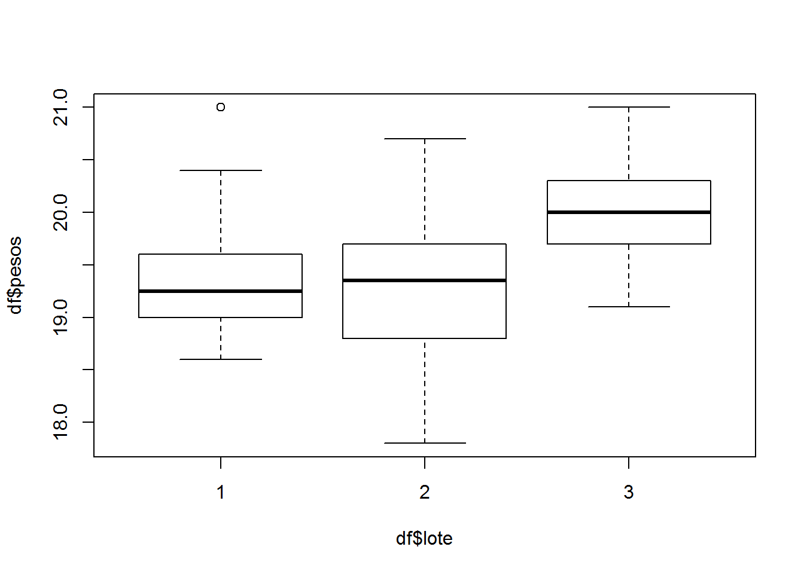
También se los puede tener en gráficos separados
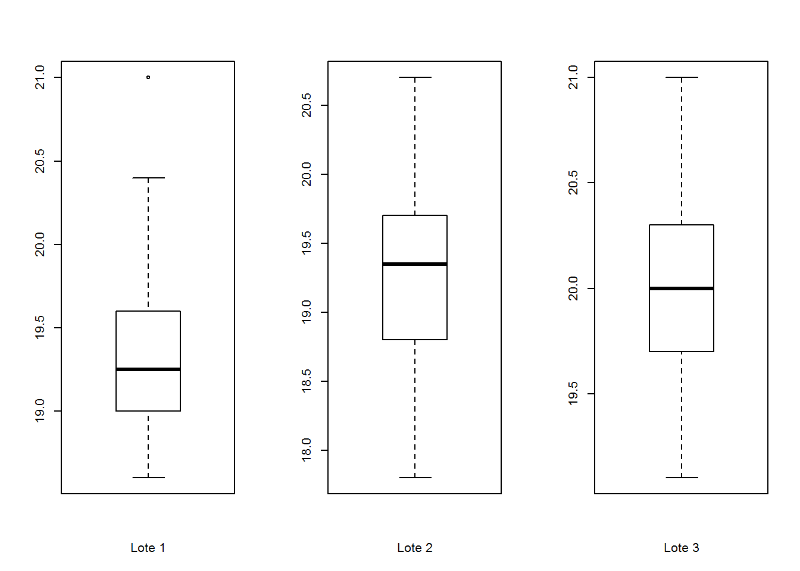
Interpretación del diagrama de caja
De acuerdo con la manera en que se construyó este diagrama, en su interpretación se debe hacer énfasis en:
El largo del diagrama (que incluye el rectángulo más ambos brazos o bigotes), ya que esto indica una medida de la variación de los datos y resulta de gran utilidad sobre todo para comparar la variación entre procesos, tratamientos, lotes o turnos de trabajo o producción. En general, entre más largo sea un diagrama indicará una mayor variación de los datos correspondientes.
La parte central del diagrama indica la tendencia central de los datos, por lo que también ayudará a comparar dos o más procesos, máquinas, lotes o turnos en cuanto a su tendencia central.
Comparar de manera visual la longitud de ambos brazos. Si uno es notoriamente más largo que el otro, entonces la distribución de los datos quizás está sesgada en la dirección del brazo más largo. También es preciso observar la ubicación de la línea mediana que parte la caja, ya que si está más cerca de uno de los extremos, será señal de un probable sesgo en los datos.
- En caso de que el diagrama esté basado en una cantidad suficiente de datos (por ejemplo 10 como mínimo), es necesario ver si hay datos fuera de las barreras interiores, marcados con un punto, ya que entre más alejado esté un dato del final del brazo, será señal de que probablemente sea un dato atípico. Si los datos caen más allá de las barreras exteriores, prácticamente es un hecho que tales datos son atípicos o aberrantes.
7.5 Conceptos de probabilidad
Experimento aleatorio
Es aquel cuyo resultado no puede anticiparse aun cuando se repita bajo las mismas condiciones. Por ejemplo, la medición de las piezas fabricadas con un mismo proceso.
Espacio Muestral
Es el conjunto de resultados posibles de un experimento aleatorio.
**Evento
Es un subconjunto del espacio muestral de un experimento aleatorio.
7.6 Interpretación de la probabilidad
Variable aleatoria
Función que asocia un número a cada resultado de un experimento aleatorio.
Variable aleatoria discreta
Variable a la que se pueden numerar los posibles valores que toma.
Distribución de probabilidad de \(X\)
Es una descripción del conjunto de los valores posibles de \(X\) con la probabilidad asociada a cada uno de estos valores. El evento que está formado por todos los resultados para los que \(X = x\), se denota por \({X = x}\), y la probabilidad de éste por \(P(X = x)\). La distribución de probabilidad de X o distribución de una variable aleatoria \(X\) es una descripción del conjunto de valores posibles de \(X (\)\(rango\) \(de\) \(X)\), junto con la probabilidad asociada a cada uno de estos valores. La distribución se representa a través de una tabla que relaciona resultados con probabilidades, o bien, por medio de una fórmula. En el caso discreto, la función \(f(x) = P(X = x)\) que va del rango de X al intervalo \([0, 1]\) recibe el nombre de función de probabilidad, y cumple con las siguientes propiedades:
- \(f(x) = P(X = x)\) (la función \(f(x)\) da la probabilidad).
\(f(x) \geq 0\) para toda x (no hay probabilidades negativas).
\(\begin{equation} \sum_{x} f(x)=1 \end{equation}\) (la suma de las probabilidades de todos los posibles valores de \(X\) es \(= 1\)).
En el caso continuo, estas mismas propiedades se enuncian de la siguiente forma: si \(f(x)\) es una función de densidad de probabilidades de la variable aleatoria continua \(X\); entonces, para cualquier intervalo de números reales \([x1, x2]\), se cumple:
\(f(x) \geq 0\)
\(\int_\mathbb{R}\ f(x) \,dx=1\) (el área bajo toda la curva es 1).
\(P(x1 \leq X \leq x2) =\) \(\int_{x_1}^{x_2} f(\mu) \,d\mu\) (la probabilidad es igual al área bajo la curva entre los valores \(x1\) y \(x2\)).
Media o valor esperado de una variable aleatoria
Si una distribución es un buen modelo, entonces a través de ella se encuentran las principales caracteríticas del sistema (población o proceso), tales como su tendencia central y variabilidad. La media \(μ\) de una variable aleatoria discreta que puede tomar los \(n\) valores \(x_1, x_2, ..., x_n\) está dada por: \[\mu=E(X)=\sum_{i} x_if(x_i)=\sum_{i} x_iP(X=x_i) \] donde \(E(X) = x_1p(x_1) + x_2p(x_2) + .... + x_np(x_n)\), se lee como âvalor esperado de \(X\)â. La varianza de la variable aleatoria \(X\) se puede definir en términos del valor esperado como: \[\sigma^2=V(X)=E(X-\mu)^2=\sum_{x} (x-\mu)^2f(x)=E(X^2)-\mu^2 \]
Mientras que la función de distribución acumulada de una variable aleatoria discreta \(X\), denotada por \(F(x)\), es \[F(X)=P(X ⤠x)=\sum_{x_iâ¤x} f(x_i) \] En el caso continuo, se sustituye la suma por la integral, \[E(X) = \int_{\mathbb{R}} xf(x) \,dx\]